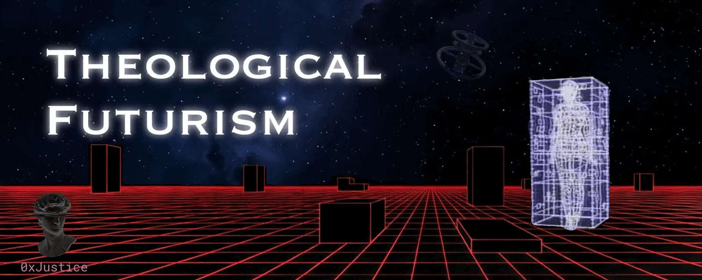
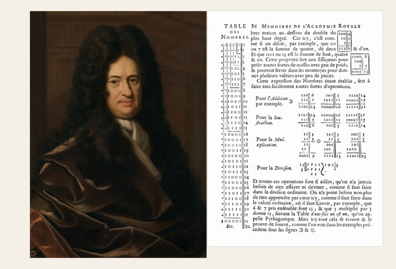
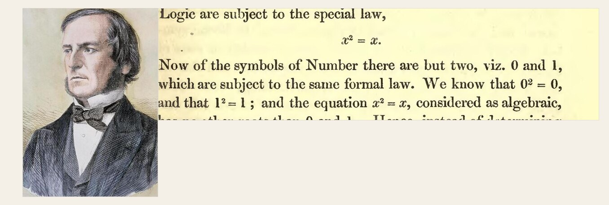
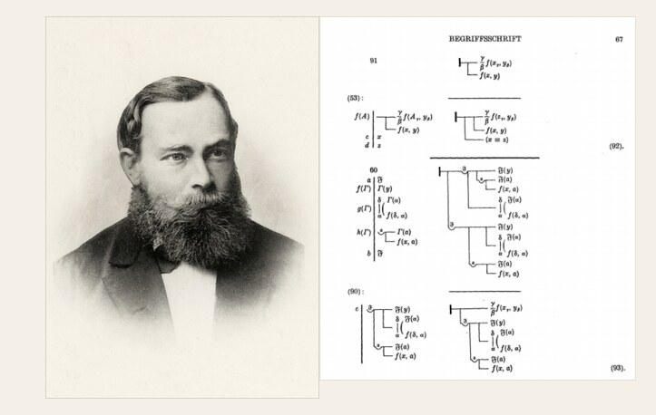
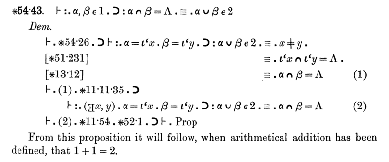
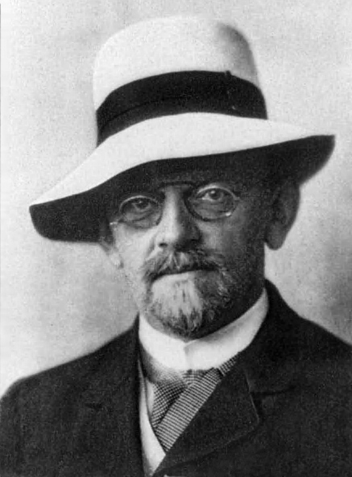
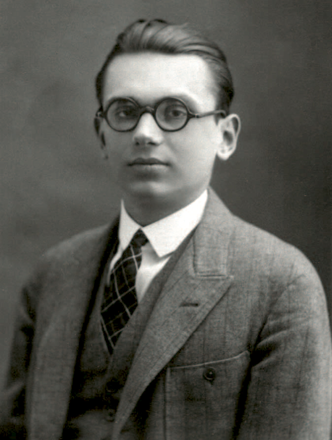
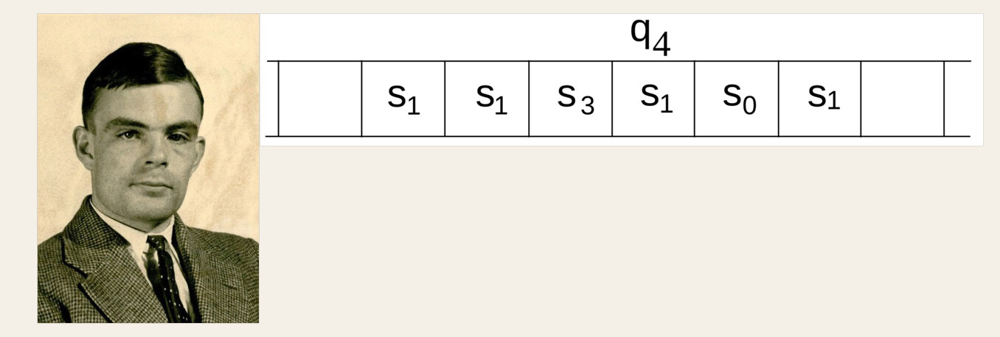
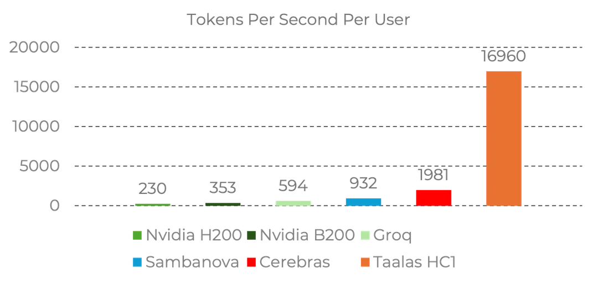

Theological Futurism

Human beings are driven to put their mark on eternity. We build monuments and carve images into stone. I think the same impulse drove much of what pulled us toward blockchains: a ledger you can write history into, and a hope that the record stays after the author is gone. Some part of us wants to reach past time.
AI pushes that desire toward synthetic life. We want to make something in our image that can think and act after we are gone. The ambition is the one in Frankenstein: assembled matter with a life of its own. The dream is a creation that outlasts its creator and keeps working on what he started.
My reading of that impulse is theological. God made man in His image. The imago Dei, the inheritance of that image, includes the desire to do what He did: make something in our image. I think computing is the fullest technological expression of that inheritance.
Computer science is a calculus of thought. It is the attempt to write reasoning down precisely enough that a thing we build can carry it out. The computers are what that calculus looks like once you can build it. The dream has a long, argumentative history, and you can't understand the present without it.
A Calculus of Thought
Gottfried Leibniz wanted a characteristica universalis, a symbolic language exact enough that a dispute could be settled by working it the way you work a sum. His proposed answer to an argument was "Let us calculate." If a disagreement contained an error, the error should show up in the steps. Reasoning would have the same inspectable structure as arithmetic.

George Boole cut the next path through mathematics. In The Laws of Thought (1854), he built an algebra of logic. Relationships that had lived in prose could be written as symbols and pushed around by rules. An engineer could, eventually, build a device that followed those rules.

Gottlob Frege tried to set arithmetic itself on logic. The Begriffsschrift (1879) gave us predicate logic, including quantifiers that could say "all" and "some" inside the symbolism. He was after more than a tidy encoding of arguments. He wanted number to sit on logic, and logic to be the ground.

The Quest for a Foundation
Bertrand Russell found a crack in that ground. In June 1902, he wrote to Frege with a paradox that cut into the system of the Grundgesetze, which was then in press. The set of all sets that are not members of themselves cannot be admitted without contradiction. Frege saw the damage and said so in an appendix. Russell then spent a decade with Alfred North Whitehead on Principia Mathematica (1910–1913), a rebuild of arithmetic on a logic meant to survive the paradox. Hundreds of pages in, they reach a proposition from which, once addition is defined, it will follow that 1 + 1 = 2. The rigor was the point. Every step had to be the kind of step a later machine could check.

David Hilbert turned the quest into a public dare. In 1900, he set out twenty-three problems, and the second asked for a proof that arithmetic is consistent. In the 1920s that dare became a research project, Hilbert's program: show that mathematics can be formalized, and prove its consistency by finitary means, the kind of reasoning that does not smuggle in the infinity it is trying to underwrite.

With Wilhelm Ackermann, in 1928, he added a second demand. Give us a procedure that takes a statement in first-order logic and decides whether it is valid in every case. He called it the Entscheidungsproblem, the decision problem. In September 1930, in Königsberg, he closed a lecture with the sentence that ended up on his tombstone: "We must know. We will know." The day before, at a conference running alongside that meeting, Kurt Gödel had told a roundtable that the program could not be finished in the form Hilbert had set.
What Cannot Ground Itself
Gödel's incompleteness theorems, announced in 1930 and published in 1931, are the result I keep coming back to. Take a formal system that is consistent, whose axioms a machine can list, and that is strong enough for ordinary arithmetic. Inside that system there are arithmetic truths the system cannot prove. If the system is consistent, it also cannot prove its own consistency. His method was to number statements and proofs so that arithmetic could talk about its own machinery. The system became rich enough to ask whether it was sound, and unable to settle the question from inside.

That is the discovery. The calculus we had hoped would found itself cannot. A system strong enough to contain real mathematics cannot certify its own ground. Truth outruns the proofs that can be written down inside it.
I think the theological implication is poetic. A creature made in the image of a maker receives the desire to create, yet remains a creature. The formal system that can do arithmetic cannot prove its own consistency. I take that as a mathematical rhyme with a doctrine I already hold: the made depends on the maker, and does not get to be its own source. Gödel was a theist, and a Platonist about mathematical truth. He treated the truths the system could not prove as still true. The symbols ran out. The reality they were about did not. Creation, on this picture, inherits the power to make and also the limit.
The Machine on the Far Side of the Limit
Alan Turing turned the decision problem into a machine. In 1936, he described a device that reads and writes symbols on a tape according to a finite table of rules. A universal version can simulate the others when you hand it their descriptions. In the same paper, he proved that the Entscheidungsproblem has no general algorithm. Alonzo Church reached that result the same year through the lambda calculus. We learned how far explicit rules can go by describing a machine that carries rules out, and by proving that some questions have no rule that settles them.

Claude Shannon gave the rules a physical instantiation. His 1937 master's thesis, published in 1938, showed that Boolean algebra describes relay circuits, and that you can simplify a circuit by simplifying the expression. An abstract logical relationship could be wired. In 1948 he did the other founding job, a mathematical theory of communication: information measured, noise named, entropy given a definition an engineer could use. Logic, machines, and information became one science.

By 1950 Turing was asking "Can machines think?" and proposing the imitation game as a way to investigate the question. He also sketched machines that learn, a child machine taught by training. The desire to create a mind had become a research program with a method.
The Other Half
Turing had already proposed that a machine could be taught. What we could actually run, from the start of the field until the last couple of years, was deduction. You wrote the rules. The machine followed them. If you specified the procedure correctly, you could trace every step. That half is programming, proof, and every formal language that descends from the quest above.
The inductive method is in the machines now. A learning algorithm fits a model to examples and then uses the fit on cases it has not been shown. I have written about large language models as industrial-scale induction. Deduction works out what follows from rules you already accept. Induction finds a pattern in observations and bets that the pattern continues.
Future machines will have both. A coding agent proposes a program, runs it against tests, and revises it when a test fails. The proposal is inductive. The test is a check, narrow and concrete, and honest about the cases it covers. Where you need a stronger check, a proof assistant can verify a candidate proof against stated rules and assumptions. We can give the machine room to search and a way to inspect what it found. I think that pairing is computer science with both of its hands. We had a calculus of rules. We now also have a way to learn the parts of the world we never managed to write down as axioms.
I suspect the discovery of LLMs will also change the computer's architecture. The one we have used until now is von Neumann's. Memory sits in one place, and the work happens in another. A learned model wants those two in the same place.
Cast Into Silicon
The impact on hardware is just starting to show. Taalas burned a model (Llama 3.1 8B) directly into the silicon to make its HC1 chip. Taalas reports that it generates 17,000 tokens per second per user. Frontier models today generate roughly 50 to 80 tokens a second. That’s roughly 325 times the generation speed of today’s frontier models, and more than 5,000 times the rate of human speech.

For perspective, the original GPT-4 generally generated on the order of 5 to 15 tokens a second in 2023. So conventional frontier-model inference has increased by roughly an order of magnitude in three years.
If Taalas follows a similar rate of improvement, generation could reach hundreds of thousands of tokens per second within a few years. At around 180,000 tokens a second, an AI would be producing roughly 135,000 words every second.
At that point, thinking about AI as something that “types faster than a human” stops being useful. The same throughput could instead support thousands of simultaneous streams of reasoning, tool use, or software agents. On August 6, 2026, AMD announced an agreement to acquire Taalas, with plans to put the technology alongside AMD Instinct GPUs.
As Far as Physics Allows
Our final destination has a name, computronium: matter arranged so that as much of it as physics allows is spent on computation. Chips with embedded models is a natural step on that road. The self-reinforcement loop has already started.
The Qwen team describes using its earlier models to prepare training data for Qwen3, including synthetic textbooks, math, and code, on the way to a pretraining run of about 36 trillion tokens. I expect that pattern to move into chip design, with stronger models helping to build the hardware that runs the generation after them. Each useful contribution feeds another part of the process.
OpenAI specifically mentioned that they had a unique advantage in building out their roadmap because they had their Astra model for a few months before the public, which accelerated their roadmap from a year to a couple of months. The snake is already eating its tail. Recursive self-improvement is already happening. It's just that humans are still in the loop.
It's built into the fabric of man. We will pursue this to the very limits of physics. We'll put a computer in every particle of matter.